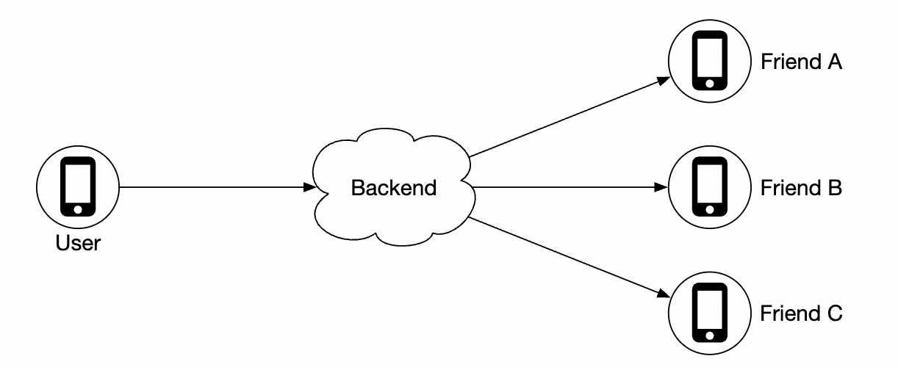
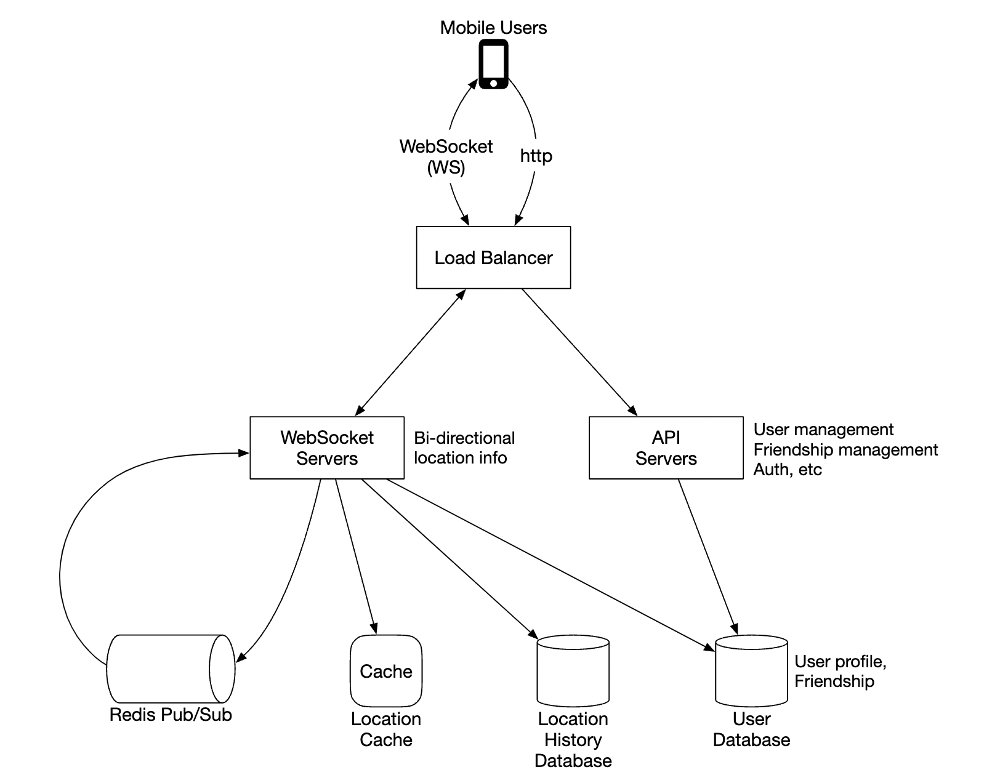
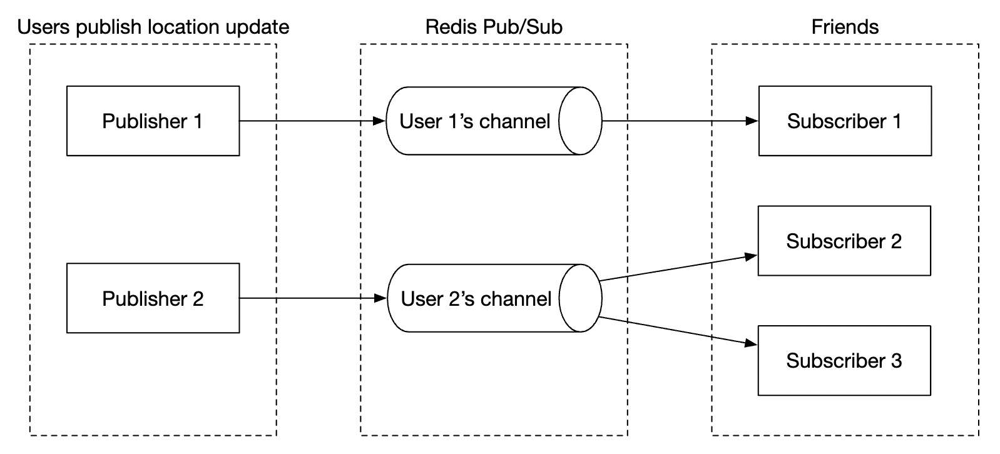
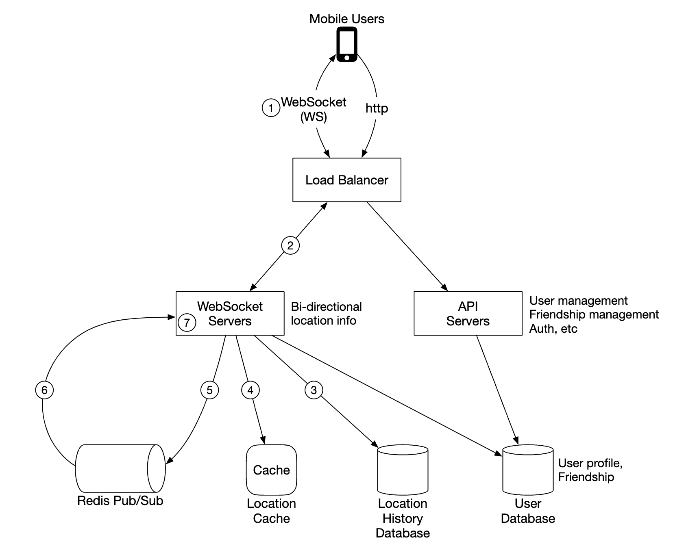
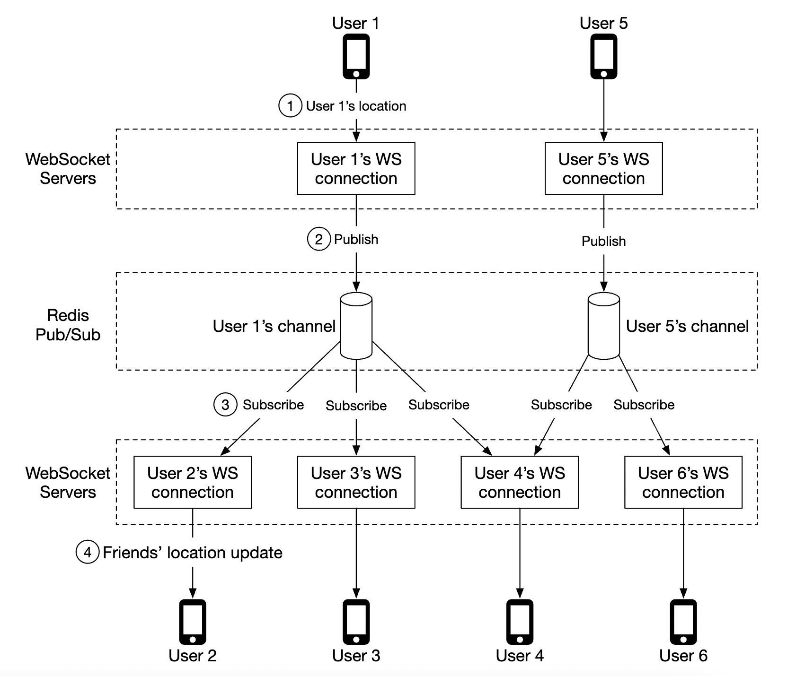
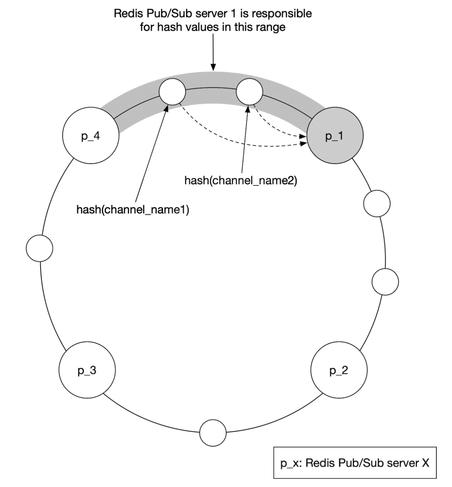
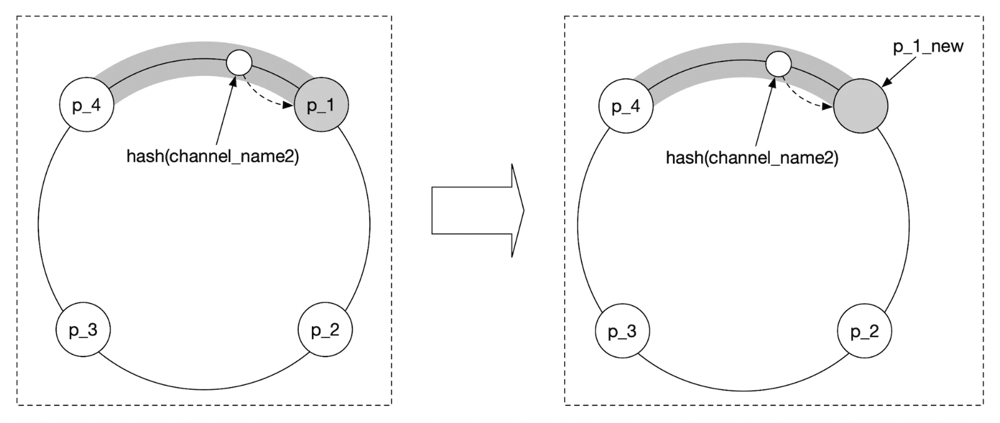
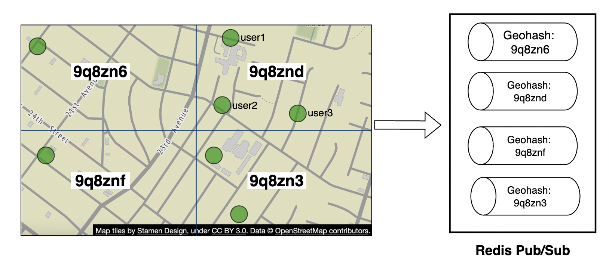
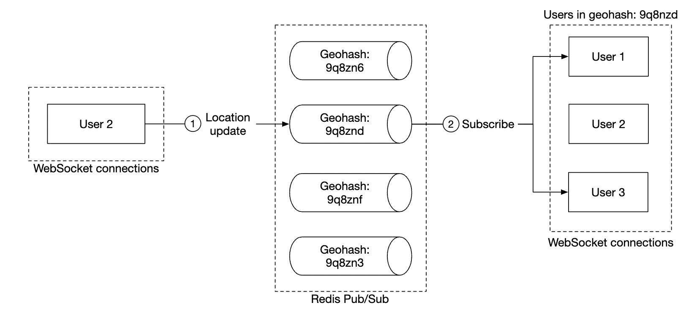
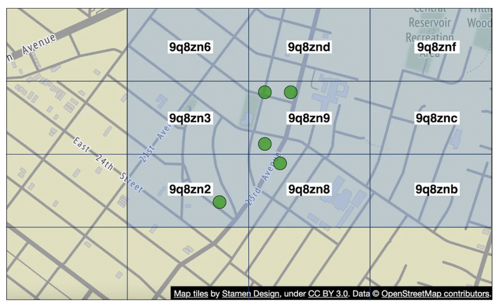

Design Nearby Friends
Proximity service mein businesses ek jagah tikte hain; yahan friends har 30 second mein hil rahe hain. 334k location updates/sec ko WebSocket + Redis location cache + Redis Pub/Sub se friends tak kaise pahunchate hain — poora design.
Introduction
Is chapter mein ek mobile app ka scalable backend banayenge jahan user apni location share karta hai aur nearby friends dekh sakta hai (Facebook ka "Nearby Friends" feature jaisa). Pichhle chapter (Proximity Service) se sabse bada farak: wahan business addresses lagbhag static the, yahan locations lagaatar badal rahi hain. Isliye ye "search" problem kam aur "real-time fan-out" problem zyada hai.
Step 1: Problem aur scope
Clarifying questions (candidate ↔ interviewer)
| Candidate ka sawaal | Interviewer ka jawab |
|---|---|
| "Nearby" kitna door tak? | 5 miles — configurable hona chahiye |
| Distance straight-line hai ya beech ki river jaisi cheezein bhi count? | Straight-line maan lo, reasonable assumption |
| Kitne users? | 1 billion users, unme 10% nearby friends use karte hain |
| Location history store karni hai? | Haan — machine learning jaisi cheezon ke liye valuable |
| Inactive friend 10 min mein list se gayab? | Haan |
| GDPR etc.? | Simplicity ke liye nahi |
Functional requirements
- Users mobile app pe nearby friends dekh sakein — har friend ke saath distance aur timestamp (location kab update hui).
- Nearby friends list har kuch seconds mein update ho.
Non-functional requirements
- Low latency: friends ki location updates bina zyada delay ke milein.
- Reliability: system generally available ho; kabhi-kabhi ek data point miss ho jaye to acceptable.
- Eventual consistency: location store ko strong consistency nahi chahiye; replicas mein kuch seconds ka delay chalega.
Back-of-the-envelope
- Nearby = 5 mile radius.
- Location refresh interval 30s — insaan ki walking speed slow hai (~3–4 mph), 30s mein location bahut nahi badalti.
- Roz 100M users feature use karte hain; concurrent users 10% = 10M.
- Average user ke 400 friends, sab feature use karte hain.
- App ek page pe 20 nearby friends dikhata hai.
- Location update QPS = 10M / 30 ≈ ~334k updates/sec.
Step 2: High-level design
Fan-out backend
Theory mein peers seedha ek dusre ko location bhej sakte hain (peer-to-peer), lekin mobile pe connections flaky hain aur battery/power constraints tight — practical nahi. Practical approach: shared backend jo fan-out karta hai.

Backend kya karta hai:
- Saare active users se location updates receive karta hai.
- Har update ke liye, un saare active friends ko dhoondhta hai jinhe ye milna chahiye, aur forward karta hai.
- Agar dono friends ka distance threshold (5 miles) se zyada hai, to forward nahi karta.
Simple lagta hai — challenge hai is scale pe banana.
Simple high-level design

- Load balancer: RESTful API servers aur stateful bidirectional WebSocket servers ke beech traffic distribute.
- RESTful API servers: stateless — friends add/remove, profile update jaise auxiliary kaam.
- WebSocket servers: stateful cluster jo friends ki location changes near real-time handle karta hai. Har client ek server se persistent connection rakhta hai. Saath hi mobile client ko initialization pe nearby friends ki locations seed karta hai.
- Redis location cache: har active user ki most recent location. Har entry pe TTL — TTL expire = user inactive, data cache se hat jaata hai.
- User database: user aur friendship data — relational ya NoSQL dono chalega.
- Location history database: user locations ka history — nearby friends feature directly use nahi karta, analytics/ML ke liye.
- Redis Pub/Sub: bahut lightweight message bus; channels sasti hain — har user ka ek channel.

Practically: WebSocket server apne connected har user ke saare friends ke channels subscribe karta hai. Friend ki update aati hai to server uska distance calculate karke apne user ko forward karta hai.
Periodic location update flow

- Mobile client location update load balancer ko bhejta hai.
- LB use us client ke WebSocket server connection pe forward karta hai.
- WS server location history DB mein save karta hai.
- Location cache update hota hai (TTL refresh). WS server user ki location apne connection handler ke variable mein bhi rakhta hai — aage distance calculations ke liye.
- WS server Redis Pub/Sub mein user ke channel pe publish karta hai (3–5 parallel ho sakte hain).
- Pub/Sub saare subscribers (user ke online friends ke WS connection handlers) ko broadcast karta hai.
- Har subscriber WS server: naya distance calculate karta hai (publisher ki nayi location vs subscriber ki stored location). Radius ke andar → nayi location + timestamp subscriber ke client ko bhejo; bahar → drop.

Average pe ek update ke ~40 forwards hain — 400 friends × 10% online. To total pushes ≈ 334k × 40 ≈ ~14M location pushes/sec. Ye number deep dive mein Redis cluster size decide karega.
API design
WebSocket routines (bidirectional):
| Routine | Direction | Payload |
|---|---|---|
| Periodic location update | Client → server | latitude, longitude, timestamp |
| Client receives location update | Server → client | friend ki location data + timestamp |
| WebSocket initialization | Client → server, phir response | Client: apni location. Server: friends ki locations ki list |
| Subscribe to a new friend | Server → client | friend ID (e.g. friend pehli baar online aaya) |
| Unsubscribe a friend | Server → client | friend ID (e.g. friend offline ho gaya / dosti khatam) |
HTTP API: traditional request/response — friends add/remove, profile update etc.
Data model
- Location cache:
user_id → {latitude, longitude, timestamp}. Redis best choice — humein sirf current location chahiye, super-fast reads/writes chahiye, aur built-in TTL eviction (inactive users auto-remove). Durability zaroori nahi — Redis instance gaya to naya empty instance lagao, 30s mein data wapas bhar jaayega. - Location history:
user_id, latitude, longitude, timestamp— same chaar columns. Heavy write workload + horizontal scale → Cassandra achha fit. (Relational bhi chal sakta hai, lekin itne data ko user_id se shard karna padega.)
Step 3: Design deep dive
Har component kitna achha scale karta hai?
- API servers: stateless — autoscaling groups se easy (CPU, load, I/O pe).
- WebSocket servers: scale out easy, lekin stateful hain — server hatane se pehle existing connections gracefully drain karo: LB mein server ko "draining" mark karo, naye connections mat bhejo, aur kaafi time baad (jab connections close ho jaayein) pool se hatao. Naya app version release karte waqt bhi yahi.
- Client initialization: client pehli baar connect hota hai to WS server: (1) user ki location apne connection handler mein update + cache mein save; (2) user DB se saare friends fetch; (3) location cache se friends ki locations batch mein fetch (TTL ki wajah se inactive friends cache mein hain hi nahi); (4) har friend ke liye distance calculate — radius ke andar ho to profile, location, timestamp client ko; (5) har friend ke Redis channel ko subscribe (active ho ya inactive — inactive channel memory nahi leta, aage dekho); (6) user ki location uske apne channel pe publish.
- User database: user_id se shard. Is scale pe user/friendship data ko ek dedicated team ki dedicated service + API ke peeche rakhna bhi samajhdaari hai.
- Location cache: 10M active users × ~100 bytes = ~1 GB — memory ek server mein fit, lekin 334k writes/sec ek Redis server ke liye bahut zyada. Har user ka data independent hai, to user_id se multiple Redis nodes pe shard karna easy hai. TTL max memory ko bhi bound karta hai. Availability ke liye har shard ka standby replica.
- Redis Pub/Sub: channel banana bahut sasta hai — jo channel exist karta hai lekin koi subscriber nahi, wo memory almost nahi leta. Isliye feature use karne wale saare users ke liye channels pre-allocate karo — user online aaye tab naya channel banake active WS servers ko notify karne ki complexity bachao.
Redis Pub/Sub ka scaling deep dive
Memory: har user ka ek channel, aur channel ek hash table + linked list mein subscribers track karta hai. Book ka estimate: 100M users × ~100 friends subscribers × ~20 bytes pointer ≈ ~200 GB → ~2 Redis servers (100 GB each) — memory bottleneck nahi hai.
CPU: ~14M pushes/sec. Agar ek Redis server ~100k pushes/sec handle kare (conservative assumption), to 14M / 100k = ~140 Redis servers. Bottleneck CPU hai, memory nahi — isliye distributed Redis Pub/Sub cluster chahiye.
Distributed Redis Pub/Sub cluster
Channels ek dusre se independent hain, to publisher ke user_id pe shard karke multiple servers pe baant sakte hain. Kaunse servers alive hain aur kaunsa channel kahan hai — iske liye service discovery (etcd, ZooKeeper):
- Servers ki list service discovery mein rakhna + simple API to update/subscribe changes.
- Key:
/config/pub_sub_ring, value:["p_1", "p_2", "p_3", "p_4"]— ek hash ring.

WebSocket server channel ke liye sahi Pub/Sub server is hash ring se nikalta hai. Efficiency ke liye hash ring har WS server pe in-memory cache ki jaati hai aur service discovery ke changes pe update hoti hai. Location update publish karna ho ya friend ka channel subscribe — dono mein: hash ring check → sahi server → publish/subscribe.
Redis Pub/Sub cluster scale up/down
Pub/Sub servers ko stateful maano: channel messages persist nahi hote, lekin subscribers ki list state hai — channel move hua to purane subscribers ko naye server pe re-subscribe karna padega. Isliye stateless servers ki tarah "jab chahe add/remove" nahi kar sakte. Practical tareeke:
- Historical traffic ke basis pe daily job se cluster size adjust.
- Spikes ke liye thoda overprovision.
Resize ke time problems:
- Bahut saare channels move hote hain → WS servers se re-subscription requests ka toofan.
- Kuch location updates miss ho sakti hain — is problem ke liye acceptable, lekin minimize karo: din ke sabse kam traffic time pe karo.
- Consistent hashing se server add/remove pe minimum channels move hote hain.

Operational: Pub/Sub server down
Monitoring software on-call ko alert kare; on-call service discovery mein hash ring update karke dead node ko naye standby node se replace kare. WS servers ko update ka notification milta hai, har WS connection handler ko pata chalta hai ki kuch channels naye server pe hain, aur wo un channels ko naye server pe re-subscribe kar leta hai. Sirf dead server ke channels affect hote hain.
Friends add/remove
Friend add hua → user ke WS connection handler ko naye friend ke Pub/Sub channel ko subscribe karna hai; remove hua → unsubscribe. "Nearby friends" ek bade app ka hissa hai, to mobile client pe ek callback register kar sakte hain jo friend add/remove event pe WS server ko message bheje, aur server subscribe/unsubscribe kare (aur friend active ho to uski location bhi bheje).
Bahut zyada friends wale users ("whales")
Friends ki ek max limit rakho — jaise Facebook pe max 5,000 friends. Friendships bidirectional hain (followers model nahi), to whale ke subscribers bhi limited. "Whale" user ka WS server thoda zyada load lega, lekin whales WS servers pe spread hain aur hamare paas 200+ WS servers jitna cluster hai, to ye manageable hai. (Followers jaisa one-way model — celebrity ke crores followers — alag problem hai.)
Nearby random person (extension)
Interviewer pooche: "kabhi-kabhi map pe random nazdeeki logon ko bhi dikhao jo opt-in karein". Idea: geohash ke basis pe Pub/Sub channels ka pool.


Geohash grid mein har koi uske channel ko subscribe karta hai. Border ke paas wale log ke liye — jo bagal ke cell mein hai lekin bahut paas — client apna geohash + 8 neighbours (total 9 channels) subscribe kare:

Redis Pub/Sub ka alternative: Erlang
Erlang (aur Elixir) highly distributed, concurrent applications ke liye bana language + runtime (BEAM VM) hai. Erlang processes bahut lightweight hain — ek server pe millions spawn kar sakte ho. Design: har user ek Erlang process; WebSocket connection aur pub/sub dono ek distributed Erlang application ke andar — friend ke process ki location updates subscribe karna natural. Challenge: Erlang niche language hai — strong Erlang developers hire karna mushkil. Team ke paas expertise hai to great option.
Step 4: Wrap-up
Core components:
- WebSocket: client ↔ server real-time communication.
- Redis: location data ke fast reads/writes (cache + TTL) aur Pub/Sub channels.
Humne RESTful API servers, WebSocket servers, data layer, location cache aur Redis Pub/Sub ka scaling dekha, Erlang alternative, aur "random nearby person" extension.
| Proximity Service (Ch16) | Nearby Friends (Ch17) | |
|---|---|---|
| Data movement | Static businesses | Har 30s update |
| Load type | Read-heavy (~5k QPS) | Write/fan-out heavy (334k updates/s, ~14M pushes/s) |
| Core mechanism | Geospatial index + cache | WebSocket + Pub/Sub fan-out |
| Consistency | Next-day updates OK | Eventual, data point loss OK |
Interview mein kaise bolein
- (5 min) Clarify: 5 miles, straight-line, 1B users/10%, history, 10-min inactivity. Math: 10M concurrent / 30s → 334k updates/s; 400 friends × 10% → 40 forwards → ~14M pushes/s.
- (10 min) Fan-out backend idea (P2P kyun nahi), simple HLD: LB, API servers, WS servers, Redis location cache (TTL), user DB, location history (Cassandra), Redis Pub/Sub.
- (8 min) Periodic update flow 1–7, API (WS routines), data model.
- (15 min) Scaling: WS draining, client init, cache sharding, Pub/Sub memory (~200 GB) vs CPU (~140 servers), hash ring in etcd/ZooKeeper, consistent hashing, resize at low traffic.
- (5 min) Extensions: friends add/remove, whales (5,000 cap), random nearby person via geohash channels, Erlang alternative.
Common follow-up questions
Q: Distance calculation kahan hota hai — publisher side ya subscriber side?
A: Subscriber ke WS server pe — usi ke paas subscriber ki latest location memory mein hai; publisher bas channel pe publish karta hai.
Q: Friend 5 miles se bahar hai, phir bhi uske channel ko subscribe kyun?
A: Kyunki wo kabhi bhi andar aa sakta hai; subscribe rakhte hain aur har update pe distance filter. Inactive channels memory nahi lete.
Q: Location cache Redis crash ho gaya?
A: Durability zaroori nahi — naya empty instance; har active user 30s mein update bhejega to cache khud bhar jaayega. Replica se failover aur bhi tez.
Q: Ek location update miss ho gaya?
A: Requirements ke hisaab se acceptable — agla update 30s mein. Isliye fire-and-forget Redis Pub/Sub chal jaata hai.
Q: WebSocket server deploy kaise karein bina users ko disconnect kiye?
A: Draining — LB naye connections band karta hai, existing gracefully close/reconnect, phir server remove.
Q: Location history 334k writes/sec — kaunsa DB?
A: Cassandra (write-optimized, horizontally scalable); ya Kafka mein stream karke batch mein data lake.
Key Takeaways
- Moving locations → push-based fan-out, query-based search nahi.
- Numbers: 10M concurrent, 30s interval → ~334k updates/s; ×40 online friends → ~14M pushes/s.
- WebSocket servers (stateful, drain on deploy) + Redis location cache (TTL = active users) + Cassandra history + Redis Pub/Sub (channel per user).
- Update flow: WS server → history DB + cache → publish → friends' WS servers distance filter karke forward.
- Pub/Sub: memory ~200 GB (chhota), CPU ~140 servers (bottleneck); hash ring in etcd/ZooKeeper + consistent hashing; resize low-traffic time pe.
- Friends cap (5,000) se whales manageable; geohash-based channels + 8 neighbours se "random nearby person".
- Erlang/Elixir ek powerful alternative hai, lekin hiring challenge.